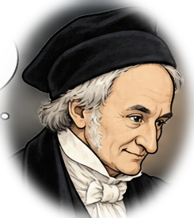

Gauss and the Eight Queens
Day 3 performance — Gauss solves eight queens in 30 seconds, accelerating as he searches.
♛
Hmm…

CandidateAttackedBacktrack
Queens placed: 0 / 8
Candidates tested: 0
Backtracks: 0
Step: 0 / 0
Performance clock: 0.0 / 30.0 seconds
The 30-second show automatically accelerates and ends with a five-second solution tableau. Play and Next step remain available for inspection.
Historical note: Gauss studied the eight queens problem; this is a modern backtracking reconstruction, not a claim about his exact historical method.